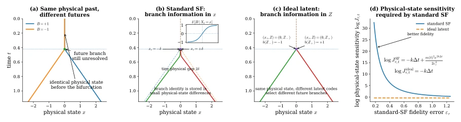
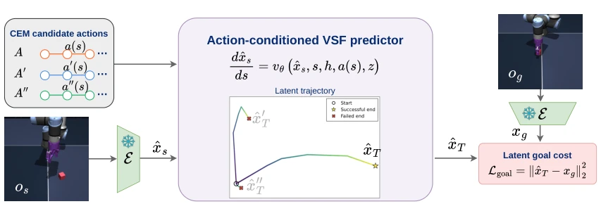
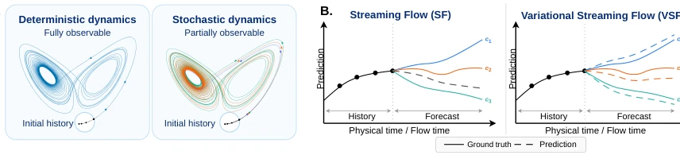
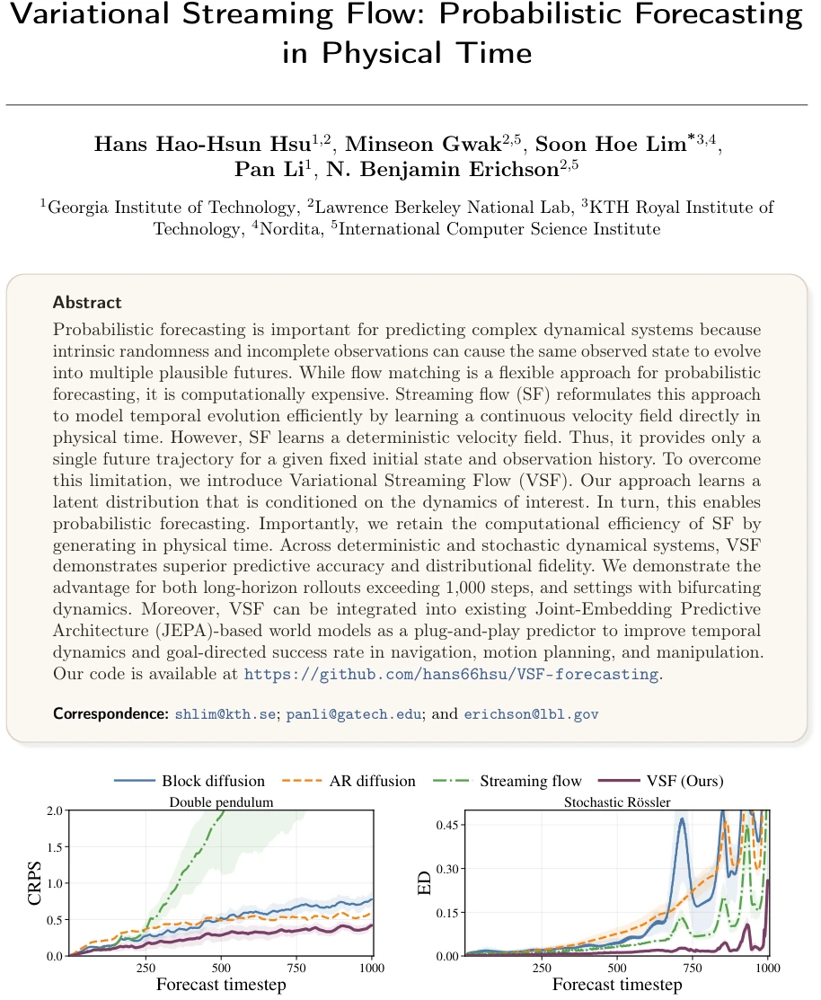
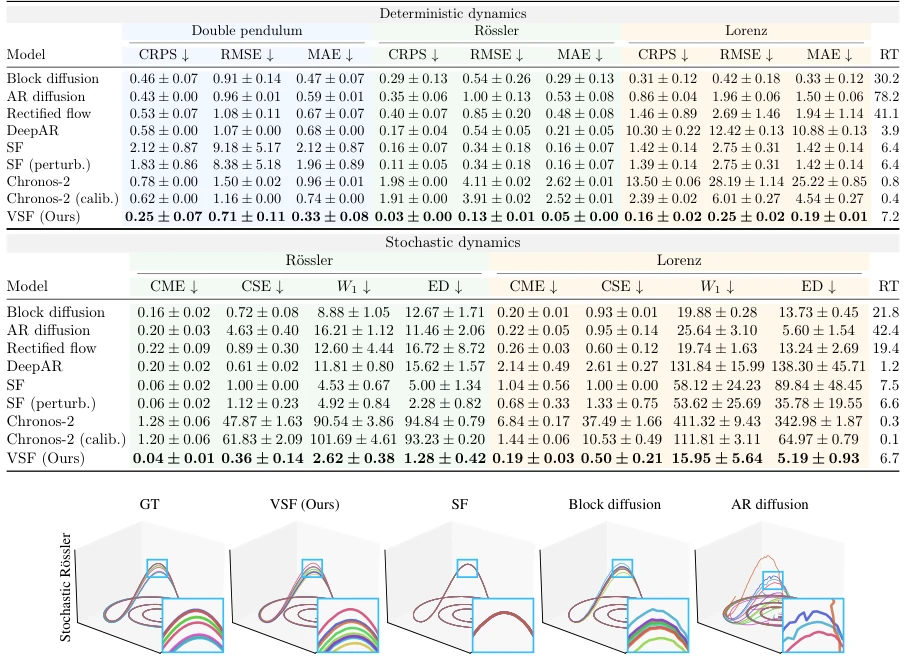
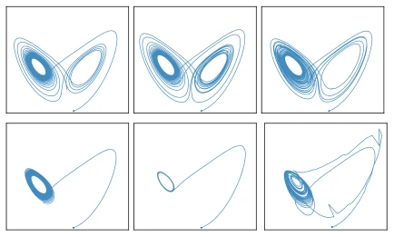
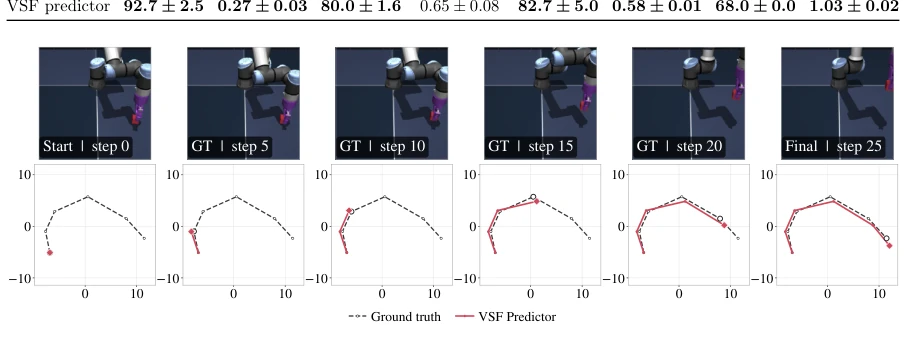
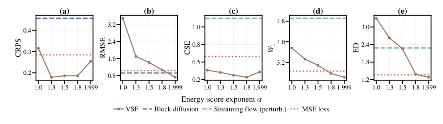
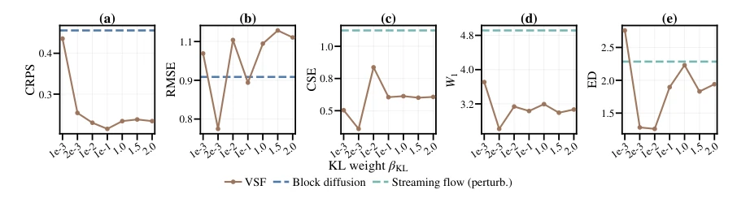
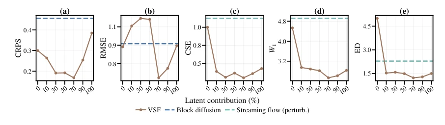

This paper adds a "variational" seasoning to physical time flow matching, attempting to address the hard flaw of Streaming Flow (SF) being able to predict only a single trajectory. Although the authors claim efficiency is preserved, essentially it still swaps auxiliary flow time for physical time, and additionally inserts a latent variable. For deterministic systems, it is indeed more stable than SF, but facing chaotic systems, whether the latent variable can truly decouple branches is a matter of metaphysics. JEPA integration is a highlight, but the world model itself has non-negligible computational cost, is adding VSF just "adding for the sake of adding"? However, the long-horizon prediction error is indeed reduced, this point is worth affirming. Compared to Diffusion's multiple sampling, VSF only requires one latent variable sampling, inference cost is indeed low, but the computational load of energy loss calculation during training is also not small. Overall, this is an attempt to find a balance between efficiency and probabilistic nature, although not completely subversive, it is very practical in specific scenarios.
研究动机Motivation
物理时间流匹配 (SF) 虽快但确定性 (Jiang et al., 2025)，无法处理多模态未来。流匹配 (Flow Matching) 灵活但计算昂贵 (Lipman et al., 2024)。现实系统常具随机性或分岔特性，单轨迹预测失效。例如天气预测中，相似观测可能对应不同风暴路径 (Feng & Fu, 2013)。现有方法要么丢失分布信息，要么效率低下。需要一种既在物理时间演化又能输出概率分布的模型。SF 在分岔点附近对状态微小差异敏感，导致轨迹漂移。VSF 旨在通过隐变量编码分支信息，避免物理状态编码的敏感性，同时保持物理时间演化的效率优势。
Physical time flow matching (SF) is fast but deterministic (Jiang et al., 2025), unable to handle multimodal futures. Flow Matching is flexible but computationally expensive (Lipman et al., 2024). Real-world systems often possess stochasticity or bifurcation characteristics, single trajectory prediction fails. For example, in weather prediction, similar observations may correspond to different storm paths (Feng & Fu, 2013). Existing methods either lose distribution information or are inefficient. A model is needed that evolves in physical time and can output probability distributions. SF is sensitive to small state differences near bifurcation points, leading to trajectory drift. VSF aims to encode branching information through latent variables, avoiding the sensitivity of physical state encoding, while maintaining the efficiency advantage of physical time evolution.

Figure 7 (a) Two futures share the same physical state up to the bifurcation time τ. (b) In non-latent SF, branch identity must be encoded by small differences in the physical state x, making the branch signal increasingly sharp as the Gaussian tube narrows. (c) An ideal latent realization instead carries branch identity in Z, allowing the same physical state Xτ = 0 to generate either future. (d) Accordingly, the standard-SF physical-state sensitivity grows as JSF τ,t ∼exp(C/ε2 τ) as the fidelity error ετ →0, while the ideal latent realization retains Jideal τ,t = e−k(t−τ).
The core is introducing a latent variable z to condition the velocity field v_theta(x, s, h, z). During training, the encoder infers the posterior q_phi(z) from observed velocities, aligning the prior through energy reconstruction loss L_ES and KL divergence constraints. During inference, sample z from the prior and fix it, integrating along physical time. Compared to SF, it allows the same state to generate different trajectories. In JEPA integration, VSF replaces the autoregressive predictor, supporting action-conditioned prediction. The training objective includes an energy score form, ensuring the predicted velocity distribution matches the true distribution. The latent variable remains unchanged during rollout, ensuring trajectory consistency. The velocity field is represented by neural network parameters theta, encoder parameters phi output Gaussian distribution mean and variance. The prior is set to a standard normal distribution.

Figure 2 VSF can serve as a predictor in a JEPA-based world model. We replace the deterministic autoregressive predictor with an action-conditioned VSF predictor while keeping the JEPA encoder and CEM planner fixed. The encoder maps the current and goal observations into latent space. For each action sequence, VSF samples multiple latents and rolls out future trajectories. CEM compares the predicted terminal states with the goal representation and uses these costs to select a plan.

Figure 3 Deterministic and stochastic systems pose different forecasting problems. (A) When deterministic dynamics are fully observed, the future is unique. With partial observations and stochastic dynamics, the same observed history can lead to different future trajectories. (B) SF produces a single forecast from the observed state, while VSF can generate multiple plausible futures.
Tested on double pendulum, Rössler, Lorenz systems, VSF outperforms SF, Diffusion, and Chronos-2 on CRPS/RMSE. Distribution fitting is better on stochastic systems. In JEPA world models, VSF improves planning success rate by 7.34%. Ablation shows latent variable conditioning is key. However, long-horizon still depends on integration accuracy, Euler method may introduce errors. Compared to AR diffusion, VSF performs better in long-horizon drift control. In the Cube task, VSF predicted trajectories are closer to Ground Truth, aiding planning success. Runtime is comparable to SF, significantly faster than diffusion models.

Figure 1 Our variational streaming flow approach obtains lower forecasting error over long rollouts than standard streaming flow. Left: continuous ranked probability score (CRPS) on the deterministic double pendulum. Right: energy distance (ED) on the partially observed Rössler system.

Figure 4 VSF preserves the Rössler geometry while capturing variability across plausible futures. We show 10 trajectories from each method. Block diffusion produces less diverse forecasts, while AR diffusion is more prone to rollout drift.

Figure 5 VSF samples remain consistent with the stochas- tic Lorenz dynamics, while AR diffusion drifts from the attractor. Two futures are shown.

Figure 6 VSF serves as an effective world-model predictor on Cube. The top row shows ground-truth rollout frames, and the bottom row compares the VSF latent trajectory (red) with the ground truth (dashed). The prediction closely follows the ground truth and leads to a successful plan.
其他图片Other Figures

Figure 8 Energy-score exponent. α ablation on (a)–(b) deterministic double pendulum and (c)–(e) stochastic Rössler. Dashed lines show the best overall baseline for each system; dotted lines show MSE-trained VSF. Three-seed means.

Figure 9 KL regularization. βKL ablation on (a)–(b) deterministic double pendulum and (c)–(e) stochastic Rössler. Dashed lines show the best overall baseline for each system. Three-seed means.

Figure 10 Latent contribution. Bottleneck latent-weight ablation on (a)–(b) deterministic double pendulum and (c)–(e) stochastic Rössler. Dashed lines show the best overall baseline for each system. Three-seed means.